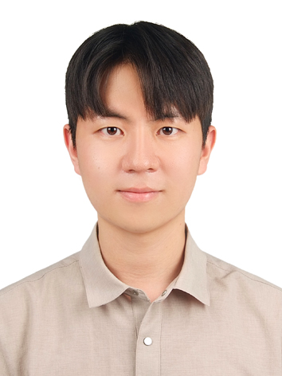
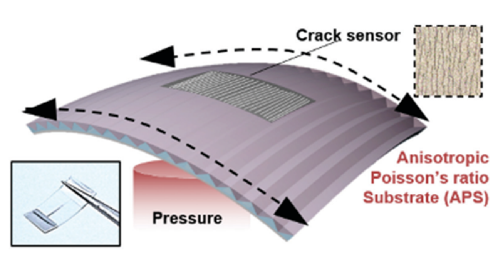
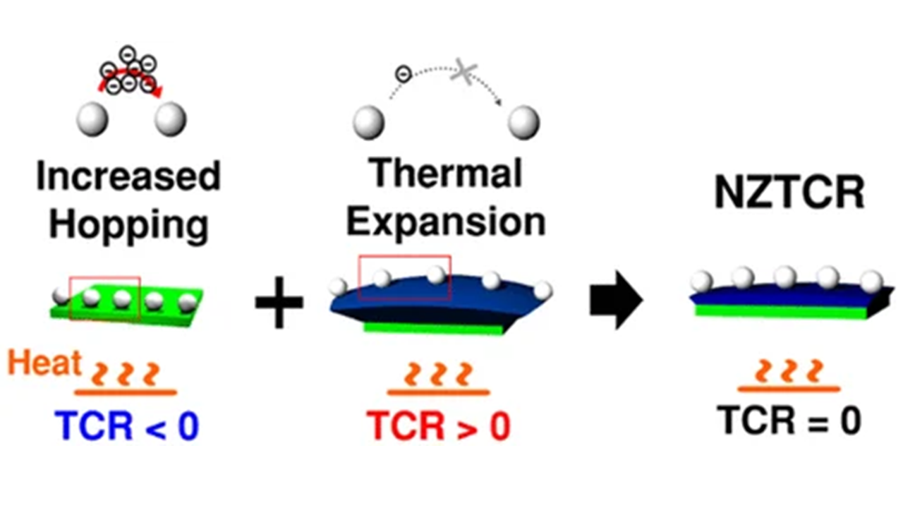
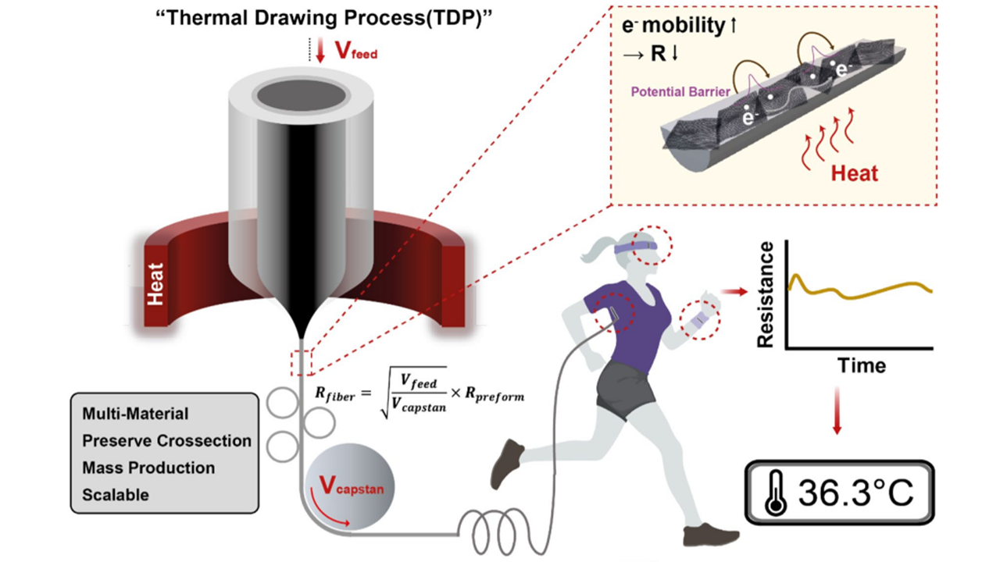
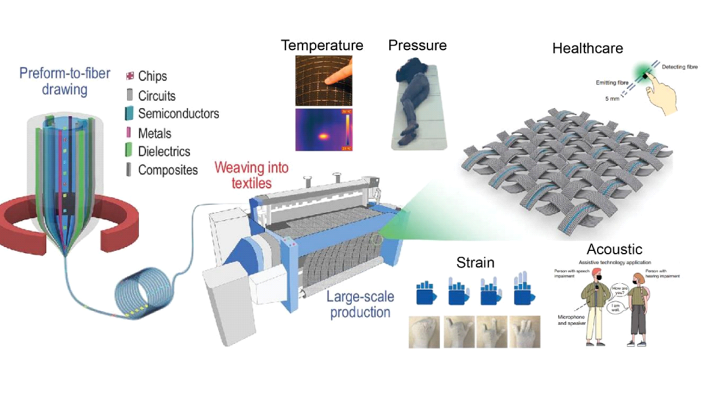
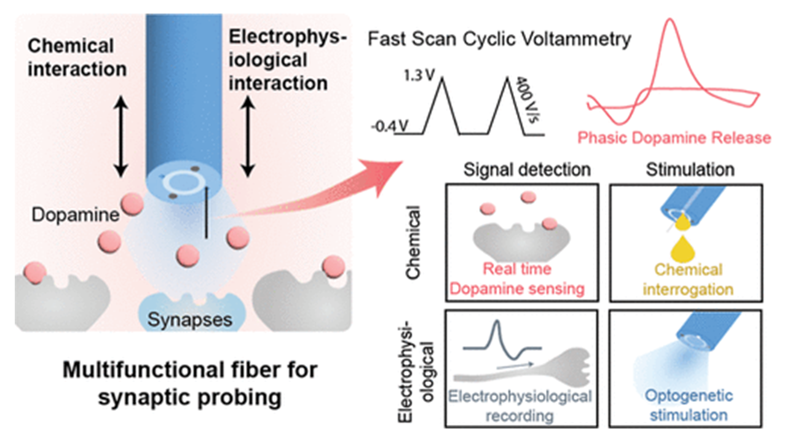
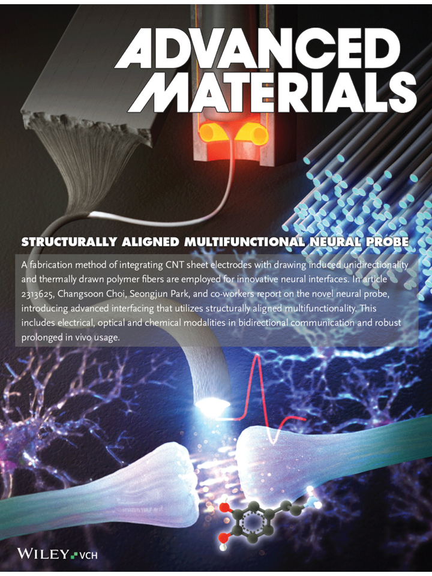
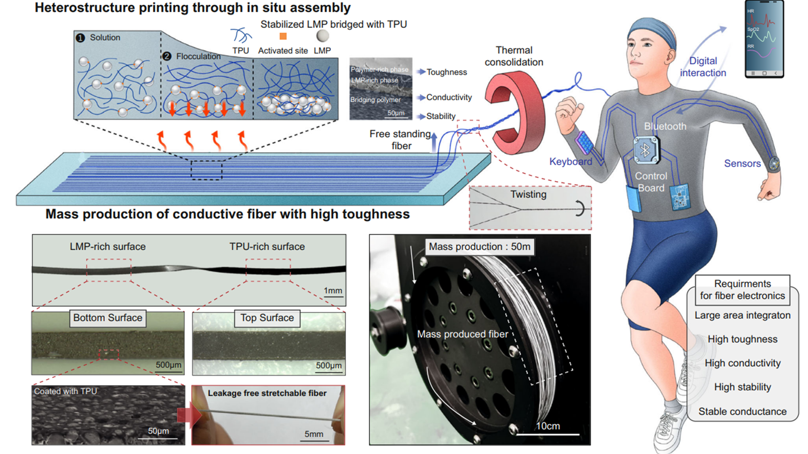

Yunheum Lee
Ph.D. student, Department of Bio and Brain Engineering
Korea Advanced Institute of Science and Technology (KAIST)
My research focuses on smart textiles and wearable electronics for biomedical and human-computer interaction applications. I develop textile-based sensors and actuators that seamlessly interface with the human body, aiming to advance next-generation healthcare monitoring and assistive technologies. My long-term goal is to develop intelligent wearable bioelectronic systems that seamlessly integrate with the human body to continuously sense, understand, and improve human health and movement.

Education
Ph.D. in Bio and Brain Engineering
Korea Advanced Institute of Science and Technology (KAIST), Daejeon, Korea
M.S. in Bio and Brain Engineering
Korea Advanced Institute of Science and Technology (KAIST), Daejeon, Korea
B.S. in Biomedical Engineering
Sungkyunkwan University (SKKU), Suwon, Korea
Research Interests
My doctoral research has aimed to make imperceptible, fiber-based biomechanical electronics practical for real-world use by addressing three key challenges.
Advancing Fiber Fabrication Processes
The first challenge lies in the limited fabrication strategies available for functional fibers. To address this, I focused on advancing the thermal drawing process (TDP). I established rheological criteria for the drawability of nanocomposites, and by tuning composite rheology through metal–ligand engineering, I enabled the thermal drawing of liquid metal particle (LMP) composites that had previously been considered infeasible.
Robust Fiber–Module Interconnection
The second challenge addresses device failure, which most frequently occurs at the interconnection between the fiber and the back-end processing module. I tackled this through two material strategies. First, I employed liquid metal particles (LMPs) to render the interconnect highly strain-insensitive, preventing signal distortion on the way to the module. Second, I developed a hybrid metal composite of LMPs and Field's metal particles (FMPs) that integrates strong adhesion, electrical connection, strain-invariant conductivity, and leakage prevention into a single material—covering all the functions required of a bioelectrode.
System-Level Fiber Interfaces
The third challenge explores how fiber devices can be deployed at the system level. I developed a range of fiber sensing devices (e.g., temperature and strain sensors), and designed them with machine intelligence in mind—optimizing device characteristics so that simpler sensing setups could achieve higher accuracy, while improving generalization across diverse users. Building on these devices, I developed a textile interface capable of performing a variety of tasks at the system level.
Publications
Other publications can be found on my Google Scholar profile.
2021

Deterministically assigned directional sensing of a nanoscale crack based pressure sensor by anisotropic Poisson ratios of the substrate
Journal of Materials Chemistry C, vol. 9, pp. 5154–5161, 2021

Noninterference Wearable Strain Sensor: Near-Zero Temperature Coefficient of Resistance Nanoparticle Arrays with Thermal Expansion and Transport Engineering
ACS Nano, vol. 15, pp. 8120–8129, 2021
2023

Thermally Drawn Multi-material Fibers Based on Polymer Nanocomposite for Continuous Temperature Sensing
Advanced Fiber Materials, vol. 5, no. 5, pp. 1712–1724, 2023

2024

Multifunctional and Flexible Neural Probe with Thermally Drawn Fibers for Bidirectional Synaptic Probing in the Brain
ACS Nano, vol. 18, no. 20, pp. 13277–13285, 2024

Structurally Aligned Multifunctional Neural Probe (SAMP) Using Forest-Drawn CNT Sheet onto Thermally Drawn Polymer Fiber for Long-Term In Vivo Operation
Advanced Materials, vol. 36, no. 27, 2313625, 2024
2025

Meter-scale heterostructure printing for high-toughness fiber electrodes in intelligent digital apparel
Nature Communications, vol. 16, 4320, 2025
* Equal contribution
Patents
연신성 전도체 파이버, 이를 포함하는 연신성 얀 및 연신성 전도체 파이버 제조방법
박성준, 서현엽, 이건희, 이윤흠
온도센서용 섬유, 그것을 포함하는 온도센서 및 온도센서용 섬유 제조 방법
이강선, 전홍찬, 조현대, 송경화, 이윤흠, 손연주, 류우미, 박성준
Honors & Awards
Samsung Electronics
The Polymer Society of Korea, Fall Meeting
Sungkyunkwan University (SKKU)
Skills & Techniques
Fabrication and Processing
Characterization
Measurements
Computational and Software
Media Coverage
화학적·전기적 양방향 소통이 가능한 파이버형 뇌-컴퓨터 인터페이스 개발
KAIST 보도자료
학과 연구 성과 취재: 김예지, 이윤흠 박사과정 (인터뷰)
KAIST 바이오및뇌공학과
KAIST 보도자료